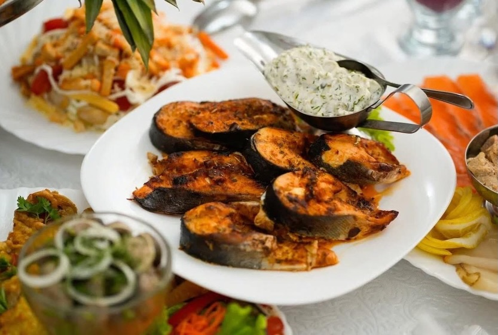
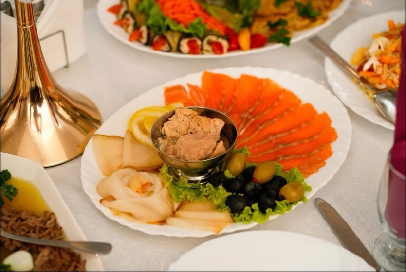
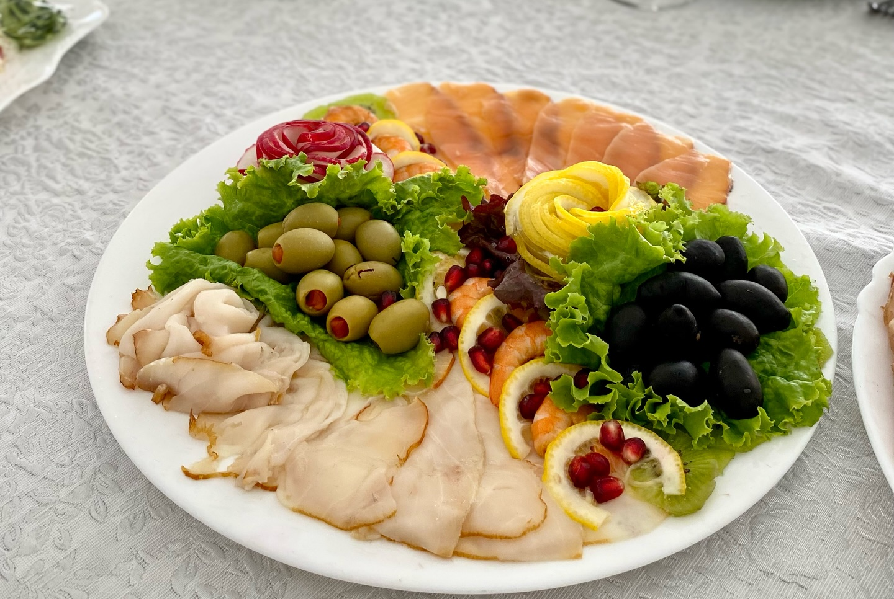
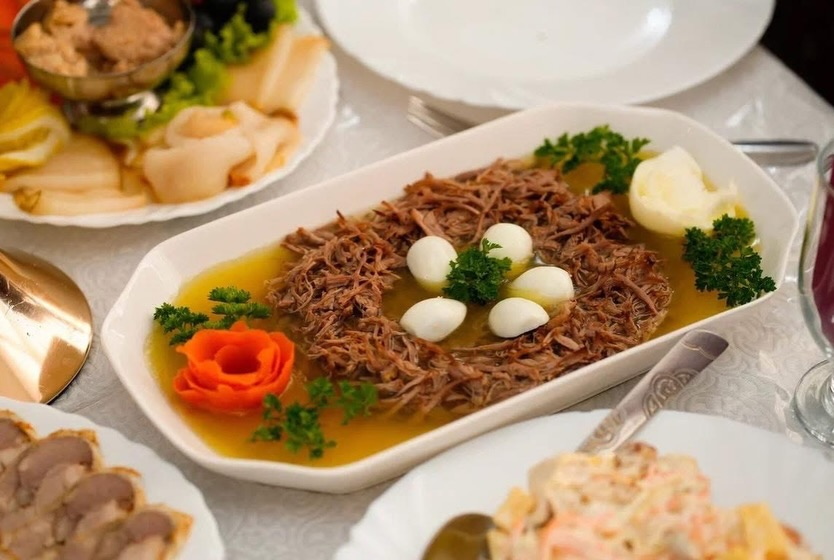
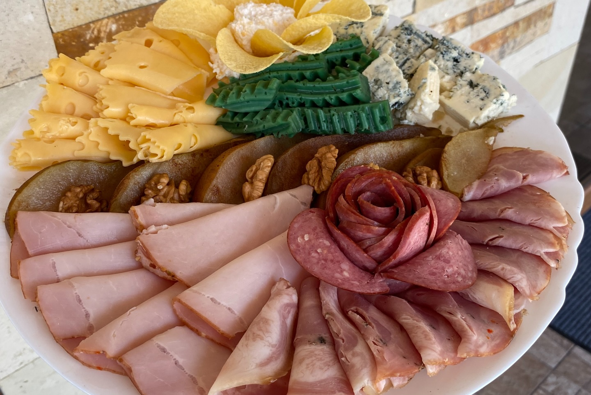
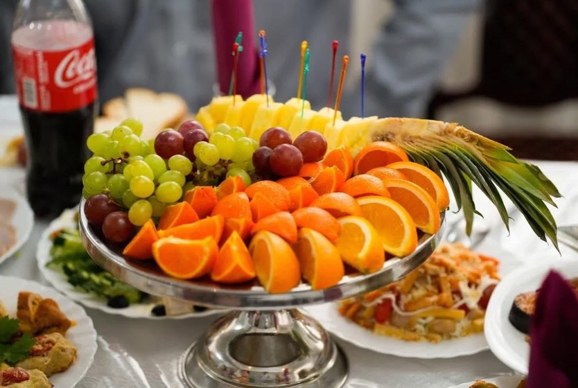

Restaurantul Pensiunii Prut vă invită să descoperiți gusturile autentice ale bucătăriei moldovenești. Preparatele noastre sunt gătite cu ingrediente proaspete, culese din grădina proprie și de la producătorii locali. Terasa cu vedere spre natură transformă fiecare masă într-o experiență memorabilă.

Fripturi de somon la grătar, condimentate și servite cu sos de ierburi aromate, morcovi și garnitură de legume de sezon.

Asortiment de somon afumat, calmar și pate de pește, decorat cu măsline, lămâie și verdeață. Ideal ca aperitiv la eveniment.

Carne de curcan, șuncă, rulouri cu creveți și rodie, măsline verzi și negre, lămâie — aranjat festiv pentru orice ocazie.

Carne fiartă îndelung în aspic limpede, cu ouă de prepeliță, morcov și pătrunjel. Un clasic al bucătăriei moldovenești de sărbătoare.

Șuncă, salam, brânzeturi asortate (Emmental, cu mucegai albastru), castraveciori, nuci și murături — perfect alături de un pahar de vin de casă.

Portocale, struguri și ananas proaspăt, aranjate festiv pe piedestal. Desertul perfect la finalul oricărui eveniment sau mese în familie.
Preparate disponibile zilnic
* Mic dejun inclus în prețul cazării (07:30 – 10:00)